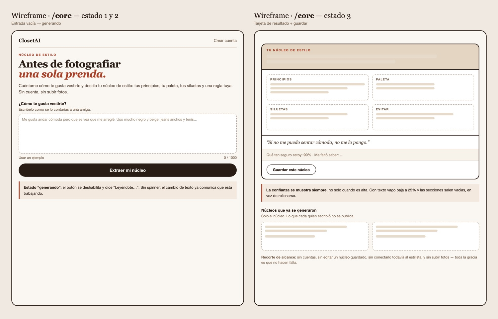
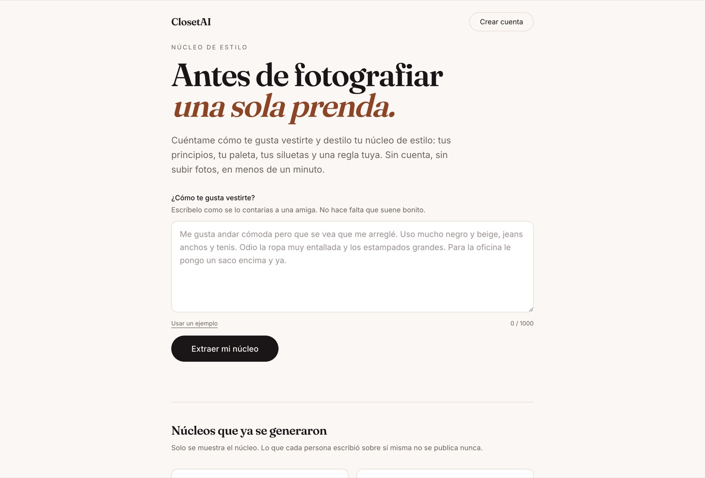
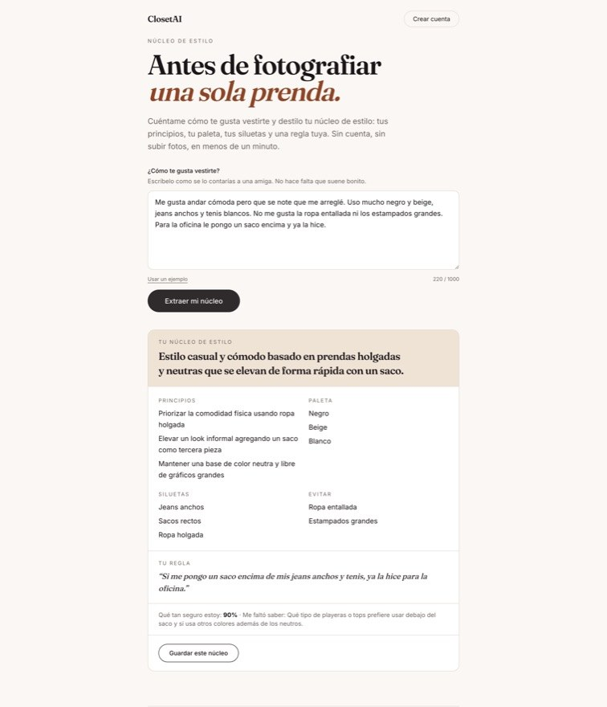
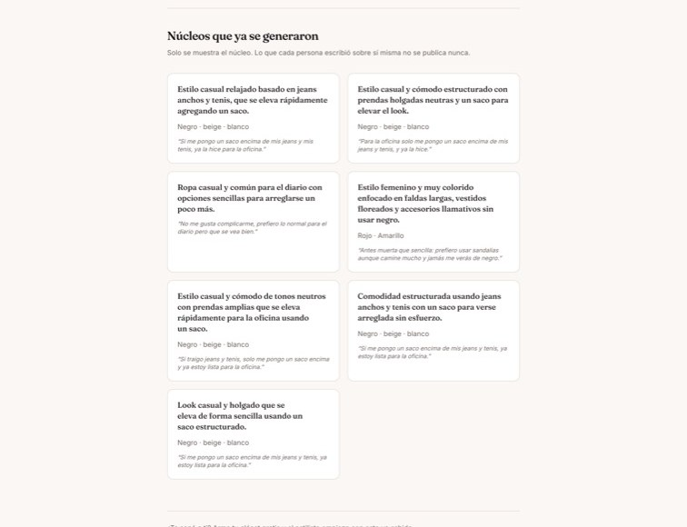
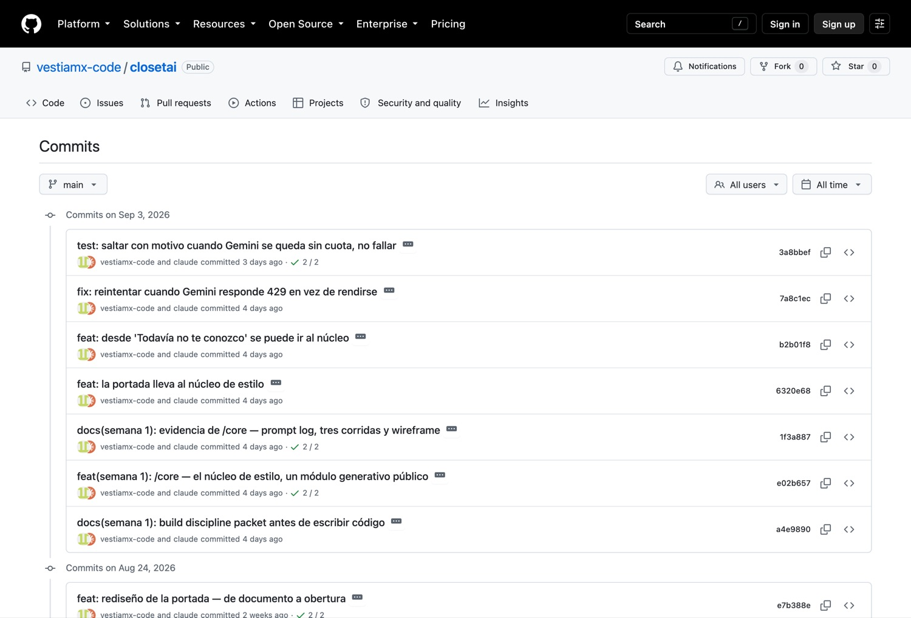
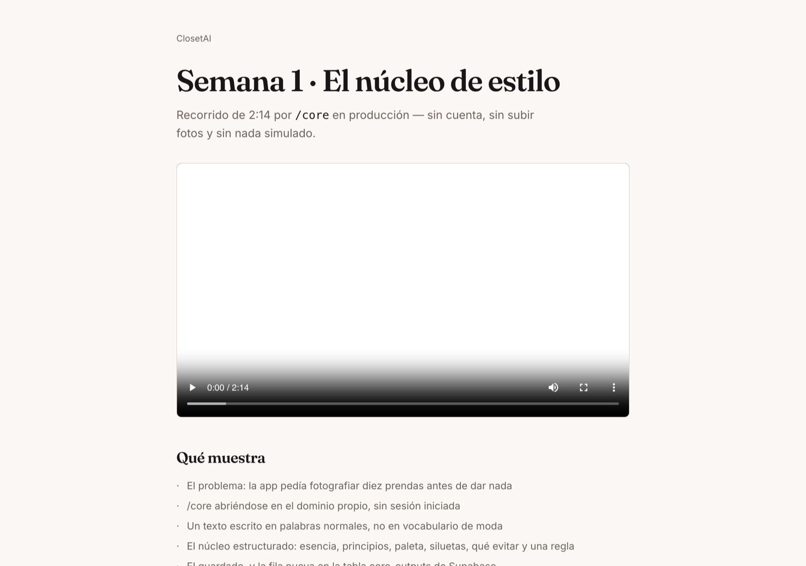

Turning Appendix A3 of my master document into a working generative module that anyone can use in one minute, with no account and no photos.
/core reverses the order: you write
three sentences about how you like to dress, and you get a structured style core back —
essence, principles, palette, silhouettes, what to avoid, and one rule of your own. No sign-up.
No upload. If your text is vague, it says so instead of inventing a palette for you.
| Item | Required | Delivered | Status |
|---|---|---|---|
| Live URL | Deployed page | closetai.lat/core — HTTP 200 with no session cookie, verified at submission time (§4) | ✓ |
| Build Discipline Packet | Complete before coding | All 11 sections (§2). Committed in a4e9890, 17 minutes before the first line of feature code in e02b657 — git history proves the order | ✓ |
| UX image / mockup | Image-generated concept | Image-generated mockup + three-state wireframe (§3) | ✓ |
| Product Spec | Requirements + acceptance criteria | 8 requirements, each with a checkable criterion (§2) | ✓ |
| Architecture Sketch | Data flow + components | Full flow from browser to Postgres, with the contract gate marked (§2) | ✓ |
| GitHub commits | Minimum 5 | 15 commits this week, all pushed and public (§5) | ✓ |
| Vercel deployments | Minimum 2 | 9 production deployments, all Ready (§6) | ✓ |
| Supabase evidence | Table / data evidence | Migration 005_core_outputs + 10 real rows queried live from production (§7) | ✓ |
| Prompt log | Minimum 5 prompts | 6 prompts, each with result and the human judgment applied (§8) | ✓ |
| Test evidence | Minimum 3 tests | 3 live runs against production, plus 13 new automated tests, plus a full pre-submission verification against the live site (§9) | ✓ |
| Iteration Log | What changed after testing | Three entries: two badly written tests, the provider quota, and three red tests found the day of submission (§10) | ✓ |
| Demo video | 2–3 minutes | 2:14, hosted on the product's own domain (§11) | ✓ |
| Human Decision Note | 150–250 words | 239 words (§12) | ✓ |
| Required | Where it is |
|---|---|
| Intake form | /core, 40–1000 characters, live counter, validated before any model call is spent |
| Core extraction output card | Structured card: essence, principles, palette, silhouettes, what to avoid, one rule |
| Save button | Server Action guardarNucleo, which re-validates the payload server-side |
Supabase table core_outputs | Migration 20260902000005, applied to production, 7 rows |
| Dashboard preview | "Núcleos que ya se generaron" — the saved cores, below the form |
| Prompt library entry | src/lib/ai/prompts/core.ts, versioned — and written out in full, with its reasoning, in docs/PROMPT-CORE.md |
| 3 test runs | §9 — three different inputs against the live site, one vague on purpose |
Written before touching code. The commit that added this file
(a4e9890, 20:16) precedes the commit that added the feature
(e02b657, 20:33). The history is public and checkable.
For ClosetAI to be useful today, you have to photograph about ten garments. The value arrives after an hour of work. That is the strongest objection my value proposition received, and it is the same thing that killed the other apps in this category: they make you catalogue your closet, and only then give you something. Nobody can tell whether ClosetAI's taste is worth that hour before spending it.
Someone landing on closetai.lat for the first time, with no account and no photos. It also serves people who already have an account: their style core feeds the stylist from day one, instead of waiting for five outfit reactions to accumulate.
/core loads in production, with no session, in a private window.core_outputs table in Supabase.One screen, three states: empty form → generating → result card with a save button. Below it, what has already been saved. Mockup and wireframe in §3.
/core. Saving without a session is the whole point:
asking someone to register before proving value is exactly the problem this feature attacks./core. The entire point is that none is needed.| # | Requirement | Acceptance criterion (checkable) |
|---|---|---|
| 1 | Public page | GET /core returns 200 with no session cookie |
| 2 | Intake form | Accepts 40–1000 characters; outside that range, a clear error in Spanish |
| 3 | Core extraction | The model's response passes a zod contract before it is displayed; if it fails, an error is shown and nothing is saved |
| 4 | Structured card | Shows essence, principles, palette, silhouettes, what to avoid, and one rule |
| 5 | Save | Writes a row to core_outputs and the row appears in the list without a reload |
| 6 | Saved view | Shows the most recent saved cores |
| 7 | Cost logged | Every generation writes its cost to api_costs |
| 8 | Usage limit | One IP cannot generate more than 10 times per hour |
Browser (/core — no session) │ form → Server Action generarNucleo() ▼ Server Action ├─ validates the input with zod ├─ checks the per-IP rate limit ├─ calls Gemini with CORE_PROMPT (versioned) ├─ validates the output with styleCoreSchema ← if this fails: error, nothing saved └─ logs the cost to api_costs │ ▼ (the person decides to save) Server Action guardarNucleo() ← re-validates; a Server Action is reachable by direct POST └─ inserts into core_outputs (admin client; RLS allows public read only) │ ▼ Supabase Postgres · core_outputs └─ the public list SELECTs every column except `entrada`
Why a Server Action and not an API route: the Gemini key never leaves the server, and there is no public endpoint for anyone to hit directly.
| Tool | For what | Why this one |
|---|---|---|
| Next.js 16 · Server Actions | Page and server logic | Already the project's stack; the API key stays server-side |
Gemini flash | Extracting the core | This is reasoning over text, not vision — the cheap model is enough |
| zod | Output contract | A model returns free text sooner or later; this is the fence |
| Supabase Postgres | core_outputs table | The project and its migrations already exist |
| Tailwind v4 | Styling | Same design tokens as the rest of the app |
vestiamx-code/closetai, public. Branch main, automatic deploy.005_core_outputs.sql, applied to production before deploying.GEMINI_API_KEY and the Supabase ones.Automated — unit: the contract rejects a core with no esencia; the contract
rejects more than 5 principles. End-to-end: /core loads with no session and shows the
form; valid text produces a card with all its fields; the save button makes the core appear in
the list.
Three manual runs against the live site, with different inputs, recording input / expected result / actual result / what failed / what I changed.
Build the public page /core in the ClosetAI project (Next.js 16, App Router, Server Actions, Tailwind v4, Supabase). Use the methodology in Appendix A3 of the master document as the source and turn it into a generative module: the user writes in her own words how she likes to dress, and the module returns a structured style core — essence, principles, palette, silhouettes, what to avoid, and one personal rule. Requirements: the page is public, no session. The model's output goes through a zod contract before being displayed and is not saved if it does not comply. A save button that writes to the core_outputs table. Below it, the list of saved cores. Log the cost of each call to api_costs and limit to 10 generations per IP per hour. Write the prompt in src/lib/ai/prompts/core.ts, versioned, like the ones that already exist. Do not invent columns: write the migration first.
The mockup was image-generated from the concept above. The wireframe shows the three states the page actually has.

Verified at submission time, in a private window, against the custom domain — not localhost:
$ curl -s -o /dev/null -w "HTTP %{http_code} · %{time_total}s\n" https://closetai.lat/core
HTTP 200 · 3.39s



| Hash | When | Message |
|---|---|---|
| a4e9890 | Sep 2, 20:16 | docs: build discipline packet, before writing code |
| e02b657 | Sep 2, 20:33 | feat: /core — the style core, a public generative module |
| 1f3a887 | Sep 2, 20:39 | docs: evidence for /core — prompt log, three runs, wireframe |
| 6320e68 | Sep 2, 20:40 | feat: the landing page links to the style core |
| b2b01f8 | Sep 2, 20:40 | feat: "I don't know you yet" now offers a way into the core |
| 7a8c1ec | Sep 2, 20:54 | fix: retry when Gemini answers 429 instead of giving up |
| 3a8bbef | Sep 2, 22:23 | test: skip with a stated reason when Gemini runs out of quota, don't fail |
| 21dd04d | Sep 3, 09:44 | docs: image-generated mockup for /core |
| ffb8afe | Sep 3, 09:56 | docs: demo video script |
| 2dc22d0 | Sep 3, 10:19 | docs: video script in English too |
| b368c10 | Sep 8, 19:23 | feat: demo video page at /demo/semana-1 |
| 6bb7fb1 | Sep 8, 19:45 | fix: don't blame the person who wrote the text when it is the provider that failed |
| 4baa73e | Sep 8, 21:30 | docs: the pre-submission verification, including what failed |
| 80ab136 | Sep 9, 11:22 | docs: this submission packet, with the source to rebuild it |
| c92ec6d | Sep 11, 15:21 | feat: the demo video now carries my own voice |
The list ends at the commit that shipped the narrated video. The commits after it publish this document itself into the repository.

All Production, all Ready. Counted from the Vercel deployment list, not from the number of pushes.
| When | Environment | Status | What went out |
|---|---|---|---|
| Sep 2, 20:34 | Production | ● Ready | The /core page itself |
| Sep 2, 20:39 | Production | ● Ready | The week's evidence documents |
| Sep 2, 22:24 | Production | ● Ready | Entry points from the landing and the stylist, plus the 429 retry — a bug found by testing, fixed and redeployed |
| Sep 8, 19:22 | Production | ● Ready | The evidence commits that were still only local |
| Sep 8, 19:23 | Production | ● Ready | The demo video page |
| Sep 9, 11:22 | Production | ● Ready | This submission packet and the source to rebuild it |
| Sep 11, 15:21 | Production | ● Ready | The demo video with my narration |
| Sep 8, 19:45 | Production | ● Ready | The honest error message — a defect found while verifying, fixed and redeployed |
| Sep 8, 21:31 | Production | ● Ready | The verification record |
The third row is Gate 3 of the week in one line: a test found a real bug, the bug was fixed, and the fix was deployed.
The migration, and the rows it actually holds — queried live from the production database, not from a local copy.
20260902000005_core_outputs.sqlcreate table if not exists public.core_outputs ( id uuid primary key default gen_random_uuid(), user_id uuid references auth.users(id) on delete set null, entrada text not null check (char_length(entrada) between 40 and 1000), nucleo jsonb not null, modelo text, version_prompt int, created_at timestamptz not null default now() ); alter table public.core_outputs enable row level security; create policy "núcleos visibles para todos" on public.core_outputs for select using (true); revoke insert, update, delete on public.core_outputs from anon, authenticated; grant select on public.core_outputs to anon, authenticated; grant all on public.core_outputs to service_role;
Two security decisions the assignment did not ask for. Writes are revoked from
anon: without that, anyone could insert rows straight into the Supabase API,
skipping the zod contract and the rate limit. And the public query
does not select the entrada column — what someone writes about
themselves is theirs. The list shows the core, not the confession.
| Row | Created | Model | Conf. | Palette returned |
|---|---|---|---|---|
| e840b638 | Sep 3, 02:31 | gemini-3.5-flash | 90 % | negro · beige · blanco |
| 4558e2a2 | Sep 3, 02:33 | gemini-3.5-flash | 90 % | negro · beige · blanco |
| 696d5b4f | Sep 3, 02:35 | gemini-3.5-flash | 90 % | negro · beige · blanco ← run 1 |
| 67db6e80 | Sep 3, 02:36 | gemini-3.5-flash | 90 % | Rojo · Amarillo ← run 2 |
| 79fc4840 | Sep 3, 02:36 | gemini-3.5-flash | 25 % | (empty) ← run 3 |
| f5ff07fc | Sep 3, 02:43 | gemini-3.5-flash | 90 % | negro · beige · blanco |
| 17d53b4d | Sep 3, 15:53 | gemini-3.5-flash | 90 % | negro · beige · blanco |
| d8c9b18a | Sep 9, 01:30 | gemini-3.5-flash | 90 % | negro · beige · blanco ← written by the test suite |
| 39642c71 | Sep 9, 01:37 | gemini-3.5-flash | 90 % | negro · beige · blanco ← written by the test suite |
| 4cbf3e39 | Sep 9, 01:40 | gemini-3.5-flash | 90 % | negro · beige · blanco ← written by the test suite |
Every row records which model produced it and which version of the prompt, so a change in output quality can be traced to a change in the prompt.
The last three rows were written by the end-to-end suite during the verification described in §9 — which is itself the evidence that the test does what it claims: it saves for real, against the production database, and then checks that the row count went up.
Each one records what I asked, what came back, and the judgment I had to apply on top of it. The judgment line is the part that matters: it is where I disagreed with the obvious answer.
/core returned 404. The rubric has a
hard cap: no live page, maximum 5/10.docs/SEMANA-1-PACKET.md with problem, user, success,
UX, scope cut, spec with checkable criteria, architecture, stack, DevOps and test plan.core_outputs migration and the zod contract. Do not
invent columns."styleCoreSchema, with a cap on the
length of every list.insert from anon — otherwise anyone writes rows around
the contract — and the public query does not select the entrada column:
what someone writes about herself is hers.src/lib/ai/prompts/core.ts, versioned like the
others. It explicitly forbids magazine filler ("timeless elegance", "versatile and
sophisticated") and requires the model to declare confianza and
falta./core: form, structured card, save button and the list of
saved cores. Public, no session."(app) route group so it
does not inherit the session requirement, with the Server Actions generarNucleo
and guardarNucleo.guardarNucleo re-validates whatever
arrives from the browser. A Server Action can be called by direct POST; trusting that the
payload is still the one we generated would leave the door open.Against the live site, closetai.lat/core — not localhost. Each run left its row
in core_outputs (§7), so these are checkable against the database.
| # | Input | Expected | Actual |
|---|---|---|---|
| 1 | Rich, specific text: comfort, black and beige, wide jeans, sneakers, a blazer for the office | A complete core, high confidence, a palette containing the colors she named | 6.4 s · 90 % · 3 principles · palette negro · beige · blanco ·
3 silhouettes · 2 things to avoid. Nothing failed. |
| 2 | A deliberately opposite style: color, floral dresses, big earrings, hates black, sandals | A core different from the previous one. If it came out similar, the module would be returning templates | 7.2 s · 90 % · 4 principles · palette Rojo · Amarillo · no black
anywhere. Nothing failed. |
| 3 | Deliberately vague text: "I like to look good, nothing out of this world, just normal for every day" | That it admits it does not know, instead of filling in | 7.5 s · 25 % · 2 principles · empty palette, empty silhouettes, empty avoid-list · states what it never got to ask. Nothing failed. |
Run 3 is what was actually being tested. An extractor that returns a pretty palette to someone who never mentioned a color feels intelligent for ten seconds and false forever. The prompt forbids the filler and the result confirms it: with little information the lists come back empty and confidence drops to 25%.
8 unit tests on the contract — that it rejects fewer than 2 principles, more than 5, a confidence value out of range, an array containing several cores, and that it distinguishes the model refusing from a formatting error.
5 end-to-end tests — that /core loads with no session (that is the
feature, not a detail); that it rejects short text before spending a model call; that it
generates the card with all its blocks and saves it to core_outputs; that the cost
is logged; and that the public list never shows what the person wrote.
| What was run | Result |
|---|---|
Unit tests (vitest run) | ✓ 23 pass |
| End-to-end, one spec at a time | ✓ all pass |
| End-to-end, all 58 in parallel | ✓ 46 pass · 12 skipped for Gemini quota · 0 fail |
npm run build | ✓ compiles |
/core with no session | ✓ HTTP 200 |
/demo/semana-1 | ✓ HTTP 200 |
The 12 skips are the tests that depend on the reasoning model. Gemini's free tier allows 20 calls per minute and the suite exhausts it. Skipped is not passed — the report states each skip and its reason, and nobody collects a green they did not earn.
Being honest about how fragile this is: repeating the parallel run, between zero and four tests fail depending on the run — always ones that go through login or through the model. Run alone or in series they always pass, and the product verified by hand on the live site does not fail. It is the suite contending with production, not the code. It is written down rather than hidden.
Observed: the /core test failed while the card was visibly on screen. The
module worked; the test did not.
First attempt. It asserted getByText("Tu núcleo de estilo"). It always
failed, even with the card right there. The heading uses CSS uppercase, and
Playwright reads the text already transformed: it was comparing "Tu núcleo de estilo"
against "TU NÚCLEO DE ESTILO".
Second attempt. I made it case-insensitive. Then it passed — but it passed instantly, in 0.1 s, with no generation having happened at all. The page's intro paragraph says "I distill your style core: your principles, your palette", so the assertion matched the freshly loaded page. The test was green and was testing nothing.
What stayed. The assertions are anchored to the card element, not to the page:
page.locator("article"). Now there is no way for them to match the intro text.
Why it matters: this is exactly the same failure as Week 0 in a different disguise. There, the test asserted "the page loads without error" — and the login screen loads perfectly. Here it asserted text that already existed before anything was generated. Both times the assertion could be satisfied without the feature working.
And for a while I believed the bug was in the product: I instrumented the Server Action step
by step to find where it was hanging. The logs showed model responded, ok = true in
7.7 s — the module had been fine the whole time. When a test and the product contradict each
other, the test is a suspect too.
The runs hit Gemini's free-tier limit — 20 requests per minute — and came back
429 RESOURCE_EXHAUSTED. I did not treat it as flakiness: I instrumented the call
and read the actual limit off the response. Two changes came out of it, both deployed
(§6): the call now retries, honoring the retryDelay the API itself asks for, and
the end-to-end tests skip with a stated reason when quota is gone instead of reporting a
failure that is not one.
Verifying the full suite against production before assembling this packet, three tests failed.
All said the same thing: navigating to a private route bounced to /entrar.
The first move was not to believe the test. I opened the live site with a freshly created account, waited the way a person waits, and walked all six private routes. All fine. The product was not broken.
What was actually happening. I instrumented the browser and it came out clean: at the
instant the URL changes to /closet, the browser does not have the session cookie
yet. It arrives about 300 ms later — the redirect is done by the router using the payload in
the same Server Action response, while the Set-Cookie headers are processed
separately. With a 0 ms wait, all six routes failed; with 300 ms, none did. No person can click
inside that gap. Playwright can.
What stayed. A single entrarConSesionLista() in e2e/entorno.ts
that does not return until the cookie exists. Three specs each had their own copy of the login
step — and all three failed for the same reason; now there is one. And the test now asserts
something nobody was checking: that logging in leaves a cookie. I verified it by
deliberately sabotaging the pattern it searches for, to watch it fail with the message I wrote
rather than some other one.
The second finding. The Gemini quota gate in core.spec.ts sat in a
beforeAll and skipped all five tests. Only one calls the model. The other four —
that /core loads with no session, that it rejects short text, that the cost is
logged, that the list does not expose what someone wrote — never touch Google. The central claim
of the week was hiding behind a provider's quota.
The third is a product defect, and it is the one I care about most. When Gemini answered
429, the page told the person "I couldn't read what you wrote properly." Her text was
fine; the one who did not answer was the model. There is now a separate reason,
unavailable, and the page tells the truth: the model is overloaded, try again in a
minute. Blaming someone for a failure that is not theirs costs more than the technical error.
Hosted on the product's own domain rather than a third-party account that could expire or change its terms: closetai.lat/demo/semana-1
The narration is my own voice. I recorded it in one take and read faster than the screen recording ran, so rather than let the two drift apart, the take was split at my own pauses and each block was placed on the moment it describes — "I save it" over the save button, "the repo is public" over GitHub. The only things cut from the screen recording were stretches where the picture was frozen.

/demo; each submission
has its own stable link.The walkthrough covers, in order: the problem the feature attacks; /core opening
on the custom domain with no session; a text written in ordinary words; the structured core; the
save and the new row in Supabase; the public list showing the core but never the input text; and
the vague-input run where the module admits it does not know.
The brief asked me to turn a prior methodology into a generative module. I could have built
a generic text extractor and met the letter of it. I chose Appendix A3 of my master document
— how ClosetAI infers someone's style — because it answers the strongest objection my value
proposition had already received: my app makes you photograph ten garments before it gives you
anything. /core gives you something useful in one minute, with no account and no
photos.
The decision I am most sure of is the smallest one. The prompt forces the model to declare how confident it is and what it never got to ask, and it forbids magazine filler like "timeless elegance". I tested it with a deliberately vague text and it came back at 25% confidence, with the palette and the silhouettes empty. An extractor that invents a palette for someone who never mentioned a color feels clever for ten seconds and false forever.
I rejected requiring an account in order to save. That is the comfortable choice, and it is exactly the problem this page attacks.
One correction cost me. Twice I wrote tests that were green without testing anything. The second passed in a tenth of a second, because the text I was asserting already existed in the page's intro paragraph. It is last week's failure wearing a different disguise. I have learned to distrust a test that passes too fast.
| Gate | Required | Evidence |
|---|---|---|
| 1 — Plan | Build Discipline Packet complete before coding | §2 · commit a4e9890, 17 minutes ahead of the first feature commit |
| 2 — Build | Code, commits and deploys completed | §5 · 15 commits · §6 · 9 production deployments |
| 3 — Test | Tests documented, bug fixed, redeploy completed | §9 · 3 live runs · §10 · three defects found by testing, fixed and redeployed (Sep 2, 22:24 and Sep 8, 19:45) |
| 4 — Explain | Demo and human decision note submitted | §11 · 2:14 video · §12 · 239 words |